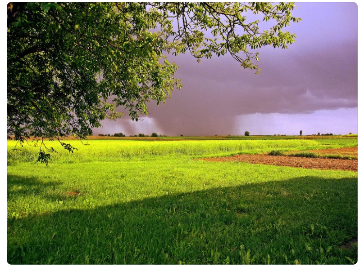

Unique advantages
The school starts early and has a high starting point. Since its birth, it has inherited the fine tradition of higher education, pioneering and striving to become stronger. Actively adapt to the needs of modern teaching development, strengthen the construction of digital campus,improve the smart teaching environment, strengthen smart governance, and become the first batch of digital campus construction experimental schools of vocational colleges in China. Deeply promote "Internet plus teaching", innovate the new teaching mode of "learning centered", and reconstruct the modern teaching ecology. The school actively serves the national "the Belt and Road" strategy, takes the lead in establishing a Chinese foreign cooperative school, and takes the lead in the overall level of internationalization in the province.Focusing on the development of pillar industries and providing strong talents and scientific and technological guarantee for local economic and social development.


The campus scenery
